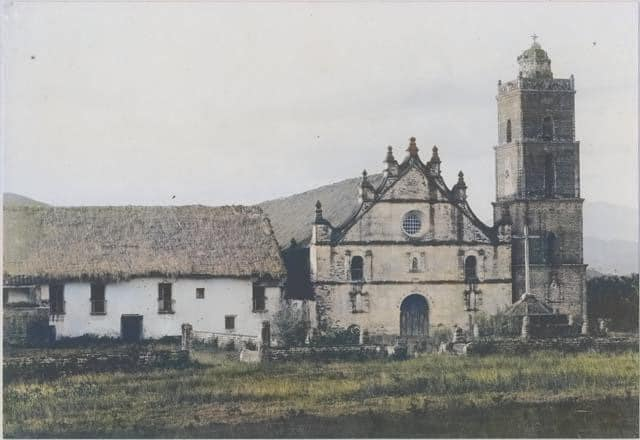
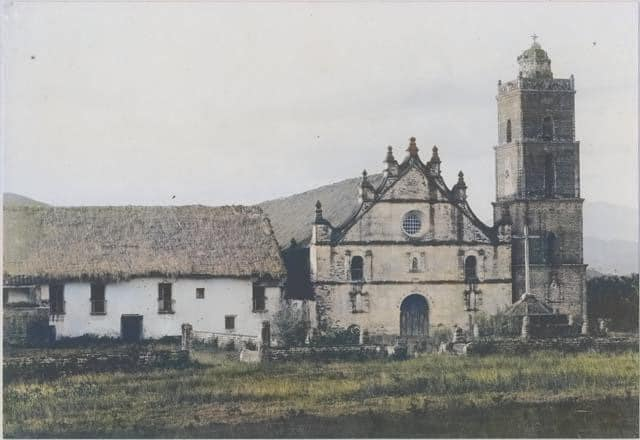

The town of Dupax, Nueva Vizcaya emanated from the Isinay word “Dopaj” which means to lie down in complete rest and relaxation. According to folklore, the site of what eventually became the poblacion of Dupax used to be the camping site of primitive hunters from surrounding tribal settlers who usually congregate in the area after hard ways of hunting in the nearby mountains.
The first known settlers were the Mala-ats (Ilongots). They are said to be the ancestors of the Isinays who now inhabit the locality. Actually, before 1725, the Mala-ats and the Isinays already lived in the vicinity of Dupax. Then in June 1726, Spanish Missionaries of the Augustinian order arrived in the locality. However, it was until April 22, 1731 that Dupax was formally founded by Father Nicholas Norbante and Agustin de San Juan. The first Captain of the town then known as Dopaj was an Ilongot by the name of Mandalito. Eventually, three prominent men representing here district tribals were appointed namely: Dayag, who headed the Mala-ats; Tiun-pising, who headed the Igorots; Bartolo, who headed the Ilongots.
Years passed, more and more influx the Ilocanoes, Ifugaos, Igorots, and other ethnic groups had taken place before and after the turn of the century. Because of some conflicts where to place the Seat of the Municipality, President Ferdinand E. Marcos signed P.D 586 implementing R.A.6372 passed by Congressman Leonardo B. Perez on November 20, 1974 providing for the division of Dupax into DUPAX DEL SUR and DUPAX DEL NORTE.